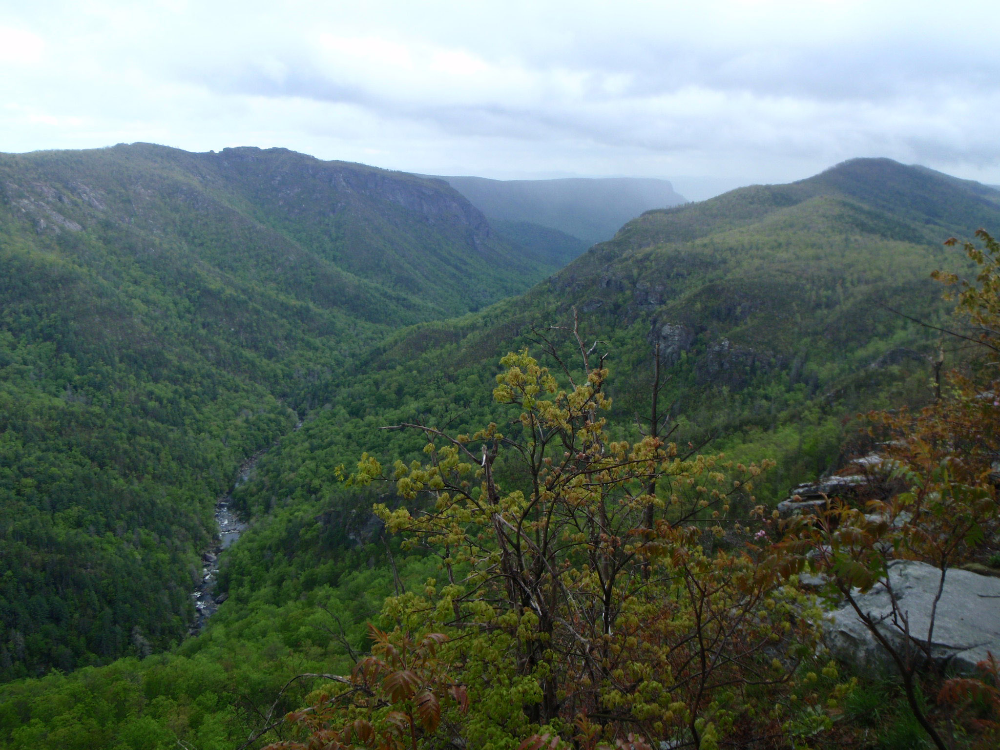
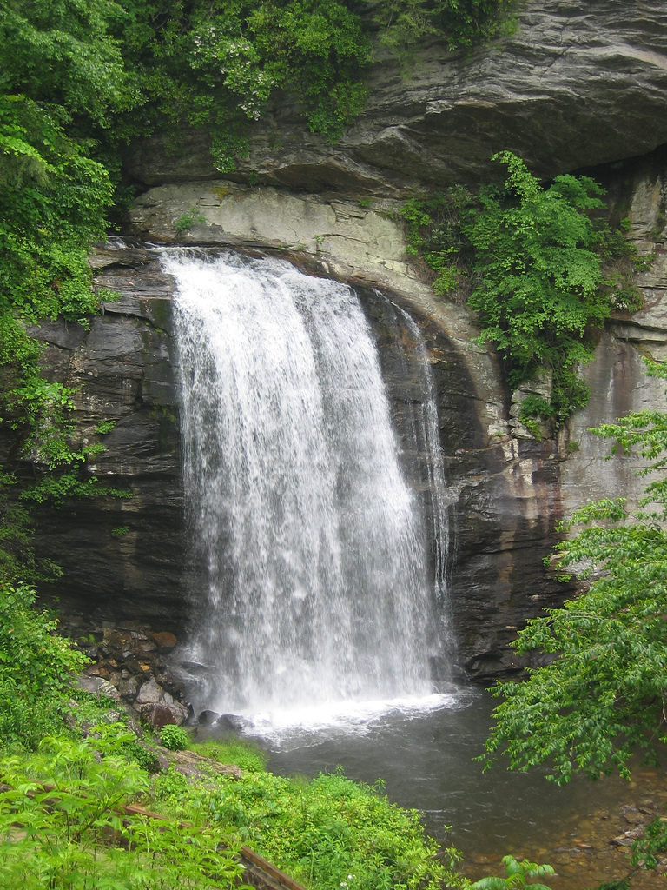

Outdooring It
Below are some images of good hiking around Asheville. First up is Linville Gorge.

To the south east of Asheville on the Blue Ridge Parkway is Black Balsam Bald. On the way there you can stop by looking glass falls:

Black Balsam is a great place to spend the day.